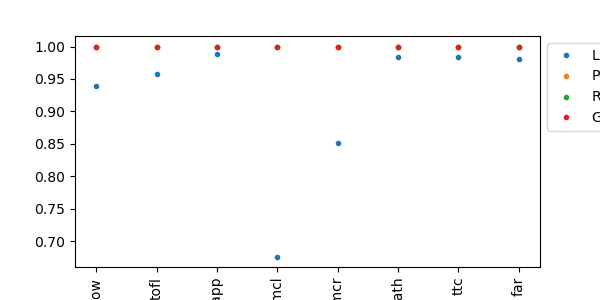
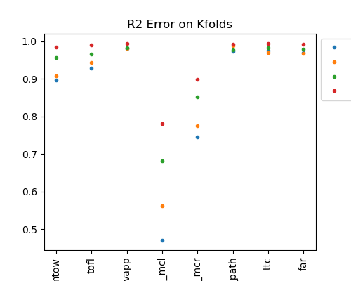
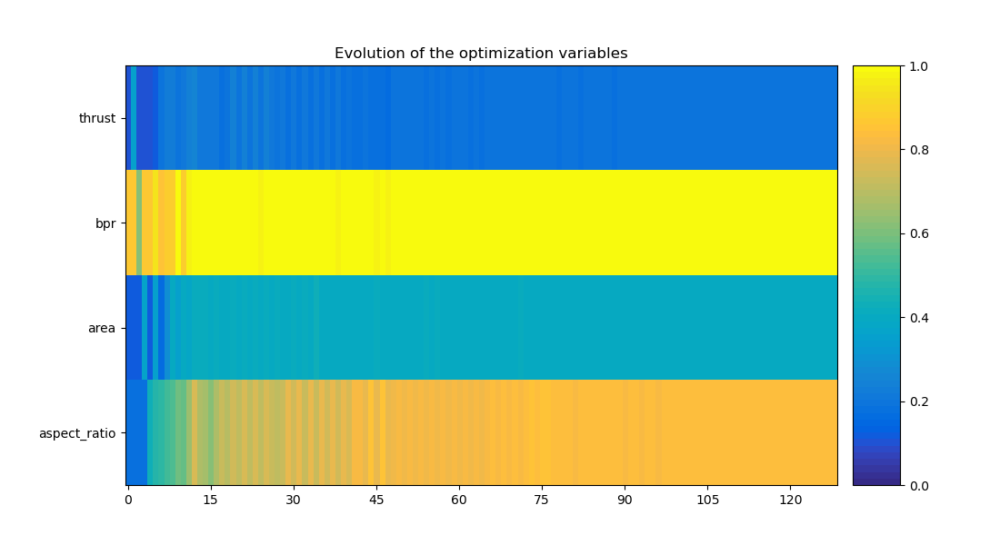
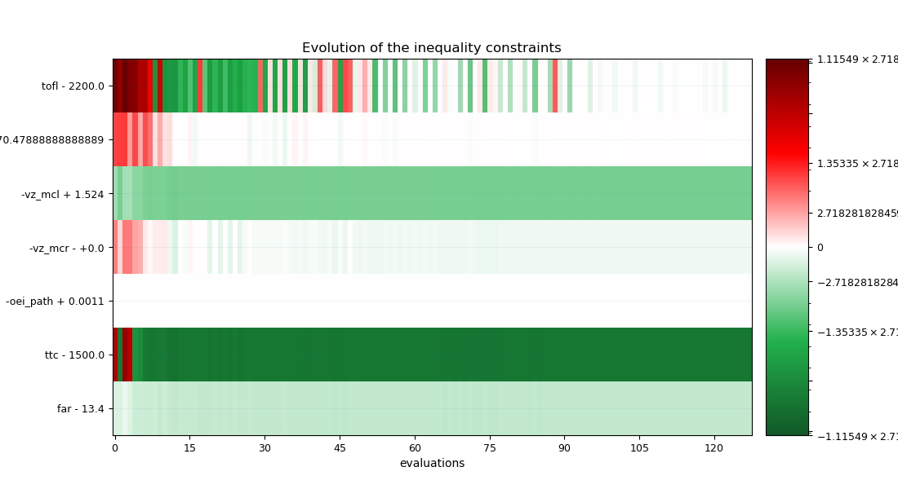

Note
Click here to download the full example code
LH2pac Surrogate models#
In this example, we will build a surrogate model for the H2TurboFan problem using several Regressors. After comparing their R2 measures, we will optimize the best surrogate model.
from gemseo.api import configure_logger
from gemseo.api import create_scenario
from gemseo.api import create_surrogate
from gemseo.mlearning.qual_measure.r2_measure import R2Measure
from gemseo_mlearning.api import sample_discipline
from discipline import H2TurboFan
from plot_mon_design_space import lh2pacDesignSpace
from marilib.utils import unit
import matplotlib.pyplot as plt
import pandas as pd
configure_logger()
<RootLogger root (INFO)>
Firstly, we instantiate the H2TurboFan discipline
discipline = H2TurboFan()
Then, we import the design space:
design_space = lh2pacDesignSpace()
print(design_space)
Design space:
+--------------+-------------+--------+-------------+-------+
| name | lower_bound | value | upper_bound | type |
+--------------+-------------+--------+-------------+-------+
| thrust | 100000 | 125000 | 150000 | float |
| bpr | 5 | 8.5 | 12 | float |
| area | 120 | 160 | 200 | float |
| aspect_ratio | 7 | 9.5 | 12 | float |
+--------------+-------------+--------+-------------+-------+
Then, we sample the discipline with an optimal LHS:
dataset = sample_discipline(discipline, design_space, \
output_names=["mtow","tofl","vapp", "vz_mcl","vz_mcr","oei_path","ttc","far"],\
algo_name= "OT_OPT_LHS", n_samples= 30)
INFO - 21:47:21:
INFO - 21:47:21: *** Start DOEScenario execution ***
INFO - 21:47:21: DOEScenario
INFO - 21:47:21: Disciplines: H2TurboFan
INFO - 21:47:21: MDO formulation: DisciplinaryOpt
INFO - 21:47:21: Optimization problem:
INFO - 21:47:21: minimize mtow(thrust, bpr, area, aspect_ratio)
INFO - 21:47:21: with respect to area, aspect_ratio, bpr, thrust
INFO - 21:47:21: over the design space:
INFO - 21:47:21: +--------------+-------------+--------+-------------+-------+
INFO - 21:47:21: | name | lower_bound | value | upper_bound | type |
INFO - 21:47:21: +--------------+-------------+--------+-------------+-------+
INFO - 21:47:21: | thrust | 100000 | 125000 | 150000 | float |
INFO - 21:47:21: | bpr | 5 | 8.5 | 12 | float |
INFO - 21:47:21: | area | 120 | 160 | 200 | float |
INFO - 21:47:21: | aspect_ratio | 7 | 9.5 | 12 | float |
INFO - 21:47:21: +--------------+-------------+--------+-------------+-------+
INFO - 21:47:21: Solving optimization problem with algorithm OT_OPT_LHS:
INFO - 21:47:21: Generation of OT_OPT_LHS DOE with OpenTURNS
INFO - 21:47:21: ... 0%| | 0/30 [00:00<?, ?it]
INFO - 21:47:22: ... 3%|▎ | 1/30 [00:00<00:00, 44.37 it/sec, obj=8.71e+4]
INFO - 21:47:22: ... 7%|▋ | 2/30 [00:01<00:01, 22.80 it/sec, obj=8.6e+4]
INFO - 21:47:23: ... 10%|█ | 3/30 [00:02<00:01, 14.36 it/sec, obj=8.8e+4]
INFO - 21:47:24: ... 13%|█▎ | 4/30 [00:02<00:02, 10.73 it/sec, obj=8.59e+4]
INFO - 21:47:25: ... 17%|█▋ | 5/30 [00:03<00:02, 8.55 it/sec, obj=8.43e+4]
INFO - 21:47:25: ... 20%|██ | 6/30 [00:04<00:03, 7.10 it/sec, obj=9.04e+4]
INFO - 21:47:26: ... 23%|██▎ | 7/30 [00:04<00:03, 6.06 it/sec, obj=7.84e+4]
INFO - 21:47:27: ... 27%|██▋ | 8/30 [00:05<00:04, 5.29 it/sec, obj=7.94e+4]
INFO - 21:47:27: ... 30%|███ | 9/30 [00:06<00:04, 4.76 it/sec, obj=8.52e+4]
INFO - 21:47:28: ... 33%|███▎ | 10/30 [00:07<00:04, 4.12 it/sec, obj=9.33e+4]
INFO - 21:47:29: ... 37%|███▋ | 11/30 [00:07<00:05, 3.76 it/sec, obj=8.51e+4]
INFO - 21:47:30: ... 40%|████ | 12/30 [00:08<00:05, 3.44 it/sec, obj=8.27e+4]
INFO - 21:47:30: ... 43%|████▎ | 13/30 [00:09<00:05, 3.18 it/sec, obj=8.86e+4]
INFO - 21:47:31: ... 47%|████▋ | 14/30 [00:10<00:05, 2.96 it/sec, obj=8.14e+4]
INFO - 21:47:32: ... 50%|█████ | 15/30 [00:10<00:05, 2.78 it/sec, obj=8.51e+4]
INFO - 21:47:33: ... 53%|█████▎ | 16/30 [00:11<00:05, 2.59 it/sec, obj=9.22e+4]
INFO - 21:47:33: ... 57%|█████▋ | 17/30 [00:12<00:05, 2.44 it/sec, obj=8.57e+4]
INFO - 21:47:34: ... 60%|██████ | 18/30 [00:13<00:05, 2.30 it/sec, obj=9.27e+4]
INFO - 21:47:35: ... 63%|██████▎ | 19/30 [00:13<00:05, 2.18 it/sec, obj=8.18e+4]
INFO - 21:47:36: ... 67%|██████▋ | 20/30 [00:14<00:04, 2.07 it/sec, obj=8.98e+4]
INFO - 21:47:36: ... 70%|███████ | 21/30 [00:15<00:04, 1.97 it/sec, obj=8.81e+4]
INFO - 21:47:37: ... 73%|███████▎ | 22/30 [00:15<00:04, 1.88 it/sec, obj=7.84e+4]
INFO - 21:47:38: ... 77%|███████▋ | 23/30 [00:16<00:03, 1.78 it/sec, obj=7.82e+4]
INFO - 21:47:39: ... 80%|████████ | 24/30 [00:17<00:03, 1.71 it/sec, obj=8.66e+4]
INFO - 21:47:39: ... 83%|████████▎ | 25/30 [00:18<00:03, 1.65 it/sec, obj=8.57e+4]
INFO - 21:47:41: ... 87%|████████▋ | 26/30 [00:19<00:02, 1.53 it/sec, obj=8.99e+4]
INFO - 21:47:41: ... 90%|█████████ | 27/30 [00:20<00:02, 1.48 it/sec, obj=8.18e+4]
INFO - 21:47:42: ... 93%|█████████▎| 28/30 [00:20<00:01, 1.43 it/sec, obj=8.04e+4]
INFO - 21:47:43: ... 97%|█████████▋| 29/30 [00:21<00:00, 1.38 it/sec, obj=9.42e+4]
INFO - 21:47:44: ... 100%|██████████| 30/30 [00:22<00:00, 1.33 it/sec, obj=8.45e+4]
INFO - 21:47:44: ... 100%|██████████| 30/30 [00:22<00:00, 1.33 it/sec, obj=8.45e+4]
INFO - 21:47:44: Optimization result:
INFO - 21:47:44: Optimizer info:
INFO - 21:47:44: Status: None
INFO - 21:47:44: Message: None
INFO - 21:47:44: Number of calls to the objective function by the optimizer: 30
INFO - 21:47:44: Solution:
INFO - 21:47:44: Objective: 78227.96380152939
INFO - 21:47:44: Design space:
INFO - 21:47:44: +--------------+-------------+-------------------+-------------+-------+
INFO - 21:47:44: | name | lower_bound | value | upper_bound | type |
INFO - 21:47:44: +--------------+-------------+-------------------+-------------+-------+
INFO - 21:47:44: | thrust | 100000 | 104989.0047922888 | 150000 | float |
INFO - 21:47:44: | bpr | 5 | 11.06963922133657 | 12 | float |
INFO - 21:47:44: | area | 120 | 129.7460430732734 | 200 | float |
INFO - 21:47:44: | aspect_ratio | 7 | 7.879509020261423 | 12 | float |
INFO - 21:47:44: +--------------+-------------+-------------------+-------------+-------+
INFO - 21:47:44: *** End DOEScenario execution (time: 0:00:22.581174) ***
We instantiate the dataframes that will be used to compare the different surrogate models :
data_r2 = pd.DataFrame()
data_r2_kfold = pd.DataFrame()
Creating a Linear Regressor surrogate model and computing the R2 measure :
surrogate_discipline1 = create_surrogate("LinearRegressor", dataset)
r2 = R2Measure(surrogate_discipline1.regression_model, True)
data_r2['LinearReg'] = r2.evaluate_learn()
data_r2_kfold['LinearReg'] = r2.evaluate_kfolds()
print("r2 de l'evaluate_learn",data_r2['LinearReg']) # learning measure
print("\n\n")
print("r2 de l'evaluate_kfolds",data_r2_kfold['LinearReg']) # k-folds cross-validation measure
print("\n\n")
INFO - 21:47:44: Build the surrogate discipline: LinReg_H2TurboFan
INFO - 21:47:44: Dataset name: H2TurboFan
INFO - 21:47:44: Dataset size: 30
INFO - 21:47:44: Surrogate model: LinearRegressor
INFO - 21:47:44: Use the surrogate discipline: LinReg_H2TurboFan
INFO - 21:47:44: Inputs: area, aspect_ratio, bpr, thrust
INFO - 21:47:44: Outputs: far, mtow, oei_path, tofl, ttc, vapp, vz_mcl, vz_mcr
INFO - 21:47:44: Jacobian: use surrogate model jacobian
r2 de l'evaluate_learn 0 0.938547
1 0.957363
2 0.988120
3 0.676139
4 0.851816
5 0.983510
6 0.983967
7 0.980454
Name: LinearReg, dtype: float64
r2 de l'evaluate_kfolds 0 0.896416
1 0.928783
2 0.980243
3 0.470521
4 0.745120
5 0.973847
6 0.975148
7 0.970051
Name: LinearReg, dtype: float64
Creating a Polynomial Regressor surrogate model and computing the R2 measure :
surrogate_discipline1 = create_surrogate("PolynomialRegressor", dataset, degree = 3)
r2 = R2Measure(surrogate_discipline1.regression_model, True)
data_r2['PolyReg'] = r2.evaluate_learn()
data_r2_kfold['PolyReg'] = r2.evaluate_kfolds()
print("r2 de l'evaluate_learn",data_r2['PolyReg']) # learning measure
print("\n\n")
print("r2 de l'evaluate_kfolds",data_r2_kfold['PolyReg']) # k-folds cross-validation measure
print("\n\n")
INFO - 21:47:44: Build the surrogate discipline: PolyReg_H2TurboFan
INFO - 21:47:44: Dataset name: H2TurboFan
INFO - 21:47:44: Dataset size: 30
INFO - 21:47:44: Surrogate model: PolynomialRegressor
/home/n7student/anaconda3/envs/lh2pac/lib/python3.9/site-packages/sklearn/utils/deprecation.py:103: FutureWarning: The attribute `n_input_features_` was deprecated in version 1.0 and will be removed in 1.2.
warnings.warn(msg, category=FutureWarning)
INFO - 21:47:44: Use the surrogate discipline: PolyReg_H2TurboFan
INFO - 21:47:44: Inputs: area, aspect_ratio, bpr, thrust
INFO - 21:47:44: Outputs: far, mtow, oei_path, tofl, ttc, vapp, vz_mcl, vz_mcr
INFO - 21:47:44: Jacobian: use surrogate model jacobian
r2 de l'evaluate_learn 0 1.0
1 1.0
2 1.0
3 1.0
4 1.0
5 1.0
6 1.0
7 1.0
Name: PolyReg, dtype: float64
r2 de l'evaluate_kfolds 0 0.908769
1 0.942575
2 0.979982
3 0.561670
4 0.775875
5 0.988317
6 0.969968
7 0.967324
Name: PolyReg, dtype: float64
Creating a RBF Regressor surrogate model and computing the R2 measure :
surrogate_discipline2 = create_surrogate("RBFRegressor", dataset)
r2 = R2Measure(surrogate_discipline2.regression_model, True)
data_r2['RBF'] = r2.evaluate_learn()
data_r2_kfold['RBF'] = r2.evaluate_kfolds()
print("r2 de l'evaluate_learn",data_r2['RBF']) # learning measure
print("\n\n")
print("r2 de l'evaluate_kfolds",data_r2_kfold['RBF']) # k-folds cross-validation measure
print("\n\n")
INFO - 21:47:44: Build the surrogate discipline: RBF_H2TurboFan
INFO - 21:47:44: Dataset name: H2TurboFan
INFO - 21:47:44: Dataset size: 30
INFO - 21:47:44: Surrogate model: RBFRegressor
INFO - 21:47:44: Use the surrogate discipline: RBF_H2TurboFan
INFO - 21:47:44: Inputs: area, aspect_ratio, bpr, thrust
INFO - 21:47:44: Outputs: far, mtow, oei_path, tofl, ttc, vapp, vz_mcl, vz_mcr
INFO - 21:47:44: Jacobian: use surrogate model jacobian
r2 de l'evaluate_learn 0 1.0
1 1.0
2 1.0
3 1.0
4 1.0
5 1.0
6 1.0
7 1.0
Name: RBF, dtype: float64
r2 de l'evaluate_kfolds 0 0.956733
1 0.966757
2 0.982029
3 0.682671
4 0.851366
5 0.977705
6 0.982859
7 0.979509
Name: RBF, dtype: float64
Creating a Gaussian Process Regressor surrogate model and computing the R2 measure :
surrogate_discipline3 = create_surrogate("GaussianProcessRegressor", dataset)
r2 = R2Measure(surrogate_discipline3.regression_model, True)
data_r2['GP'] = r2.evaluate_learn()
data_r2_kfold['GP'] = r2.evaluate_kfolds()
print("r2 de l'evaluate_learn",data_r2['GP']) # learning measure
print("\n\n")
print("r2 de l'evaluate_kfolds",data_r2_kfold['GP']) # k-folds cross-validation measure
print("\n\n")
INFO - 21:47:44: Build the surrogate discipline: GPR_H2TurboFan
INFO - 21:47:44: Dataset name: H2TurboFan
INFO - 21:47:44: Dataset size: 30
INFO - 21:47:44: Surrogate model: GaussianProcessRegressor
INFO - 21:47:44: Use the surrogate discipline: GPR_H2TurboFan
INFO - 21:47:44: Inputs: area, aspect_ratio, bpr, thrust
INFO - 21:47:44: Outputs: far, mtow, oei_path, tofl, ttc, vapp, vz_mcl, vz_mcr
INFO - 21:47:44: Jacobian: use finite differences
r2 de l'evaluate_learn 0 1.0
1 1.0
2 1.0
3 1.0
4 1.0
5 1.0
6 1.0
7 1.0
Name: GP, dtype: float64
r2 de l'evaluate_kfolds 0 0.985080
1 0.989670
2 0.993931
3 0.780541
4 0.898234
5 0.991725
6 0.993864
7 0.992088
Name: GP, dtype: float64
Let’s compare the results of the differents models
labels=["mtow","tofl","vapp", "vz_mcl","vz_mcr","oei_path","ttc","far"]
fig = plt.figure(figsize=(6,3))
plt.plot(range(len(labels)),data_r2, '.', )
plt.xticks(range(len(labels)), labels, rotation = 'vertical')
plt.legend(['LinearRegressor', 'PolynomialRegressor', 'RBFRegressor', 'GaussianProcessRegressor'], \
bbox_to_anchor=(1,1), loc="upper left")
fig.savefig('surrogate_r2.png', bbox_inches='tight', dpi=150)
plt.show()
fig = plt.figure(figsize=(5,4))
plt.plot(range(len(labels)),data_r2_kfold, '.', )
plt.xticks(range(len(labels)), labels, rotation = 'vertical')
plt.legend(['LinearRegressor', 'PolynomialRegressor', 'RBFRegressor', 'GaussianProcessRegressor'], \
bbox_to_anchor=(1,1), loc="upper left")
plt.title("R2 Error on Kfolds")
fig.savefig('surrogate_r2_kfold.png', bbox_inches='tight', dpi=150)
plt.show()
- 
- 
optimization of the best (based on the R2 results) surrogate model, Here it’s the surrogate model created with a Gaussian Process Regressor
#first we create a scenario
scenario = create_scenario([surrogate_discipline3], "DisciplinaryOpt", "mtow", design_space)
scenario.add_constraint("tofl", "ineq", positive=False, value = 2200.)
scenario.add_constraint("vapp", "ineq", positive=False, value = unit.mps_kt(137.))
scenario.add_constraint("vz_mcl", "ineq", positive=True, value = unit.mps_ftpmin(300.))
scenario.add_constraint("vz_mcr", "ineq", positive=True, value = unit.mps_ftpmin(0.))
scenario.add_constraint("oei_path", "ineq", positive=True, value=0.0011)
scenario.add_constraint("ttc", "ineq", positive=False, value=unit.s_min(25.))
scenario.add_constraint("far", "ineq", positive=False, value=13.4)
before executing it with a gradient-free optimizer:
scenario.execute({"algo": "NLOPT_COBYLA", "max_iter": 1000})
INFO - 21:47:45:
INFO - 21:47:45: *** Start MDOScenario execution ***
INFO - 21:47:45: MDOScenario
INFO - 21:47:45: Disciplines: Surrogate discipline: GPR_H2TurboFan
INFO - 21:47:45: Dataset name: H2TurboFan
INFO - 21:47:45: Dataset size: 30
INFO - 21:47:45: Surrogate model: GaussianProcessRegressor
INFO - 21:47:45: Inputs: area, aspect_ratio, bpr, thrust
INFO - 21:47:45: Outputs: far, mtow, oei_path, tofl, ttc, vapp, vz_mcl, vz_mcr
INFO - 21:47:45: MDO formulation: DisciplinaryOpt
INFO - 21:47:45: Optimization problem:
INFO - 21:47:45: minimize mtow(thrust, bpr, area, aspect_ratio)
INFO - 21:47:45: with respect to area, aspect_ratio, bpr, thrust
INFO - 21:47:45: subject to constraints:
INFO - 21:47:45: tofl(thrust, bpr, area, aspect_ratio) <= 2200.0
INFO - 21:47:45: vapp(thrust, bpr, area, aspect_ratio) <= 70.47888888888889
INFO - 21:47:45: vz_mcl(thrust, bpr, area, aspect_ratio) >= 1.524
INFO - 21:47:45: vz_mcr(thrust, bpr, area, aspect_ratio) >= 0.0
INFO - 21:47:45: oei_path(thrust, bpr, area, aspect_ratio) >= 0.0011
INFO - 21:47:45: ttc(thrust, bpr, area, aspect_ratio) <= 1500.0
INFO - 21:47:45: far(thrust, bpr, area, aspect_ratio) <= 13.4
INFO - 21:47:45: over the design space:
INFO - 21:47:45: +--------------+-------------+-------------------+-------------+-------+
INFO - 21:47:45: | name | lower_bound | value | upper_bound | type |
INFO - 21:47:45: +--------------+-------------+-------------------+-------------+-------+
INFO - 21:47:45: | thrust | 100000 | 104989.0047922888 | 150000 | float |
INFO - 21:47:45: | bpr | 5 | 11.06963922133657 | 12 | float |
INFO - 21:47:45: | area | 120 | 129.7460430732734 | 200 | float |
INFO - 21:47:45: | aspect_ratio | 7 | 7.879509020261423 | 12 | float |
INFO - 21:47:45: +--------------+-------------+-------------------+-------------+-------+
INFO - 21:47:45: Solving optimization problem with algorithm NLOPT_COBYLA:
INFO - 21:47:45: ... 0%| | 0/1000 [00:00<?, ?it]
INFO - 21:47:45: ... 5%|▍ | 46/1000 [00:00<00:00, 9803.21 it/sec, obj=7.95e+4]
INFO - 21:47:45: ... 10%|▉ | 96/1000 [00:00<00:00, 4923.44 it/sec, obj=7.92e+4]
INFO - 21:47:45: ... 13%|█▎ | 129/1000 [00:00<00:00, 3764.64 it/sec, obj=7.92e+4]
INFO - 21:47:45: Optimization result:
INFO - 21:47:45: Optimizer info:
INFO - 21:47:45: Status: None
INFO - 21:47:45: Message: Successive iterates of the objective function are closer than ftol_rel or ftol_abs. GEMSEO Stopped the driver
INFO - 21:47:45: Number of calls to the objective function by the optimizer: 130
INFO - 21:47:45: Solution:
INFO - 21:47:45: The solution is feasible.
INFO - 21:47:45: Objective: 79204.48370244469
INFO - 21:47:45: Standardized constraints:
INFO - 21:47:45: -oei_path + 0.0011 = -0.015778145395502825
INFO - 21:47:45: -vz_mcl + 1.524 = -2.9064943606839124
INFO - 21:47:45: -vz_mcr - +0.0 = -0.19630896186072666
INFO - 21:47:45: far - 13.4 = -0.770714928386651
INFO - 21:47:45: tofl - 2200.0 = 5.883158064534655e-05
INFO - 21:47:45: ttc - 1500.0 = -273.08660284870234
INFO - 21:47:45: vapp - 70.47888888888889 = 1.0383628534782474e-07
INFO - 21:47:45: Design space:
INFO - 21:47:45: +--------------+-------------+-------------------+-------------+-------+
INFO - 21:47:45: | name | lower_bound | value | upper_bound | type |
INFO - 21:47:45: +--------------+-------------+-------------------+-------------+-------+
INFO - 21:47:45: | thrust | 100000 | 109416.403844102 | 150000 | float |
INFO - 21:47:45: | bpr | 5 | 12 | 12 | float |
INFO - 21:47:45: | area | 120 | 152.1568478493883 | 200 | float |
INFO - 21:47:45: | aspect_ratio | 7 | 11.1490301932375 | 12 | float |
INFO - 21:47:45: +--------------+-------------+-------------------+-------------+-------+
INFO - 21:47:45: *** End MDOScenario execution (time: 0:00:00.272936) ***
{'max_iter': 1000, 'algo': 'NLOPT_COBYLA'}
Lastly, we can plot the optimization history:
scenario.post_process("OptHistoryView", save=False, show=False, \
file_path = "BestSurrogate")
plt.show()
- 


- 
Total running time of the script: ( 0 minutes 24.452 seconds)